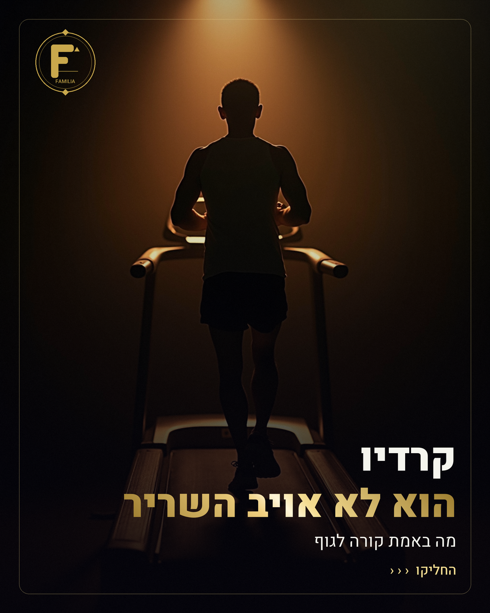
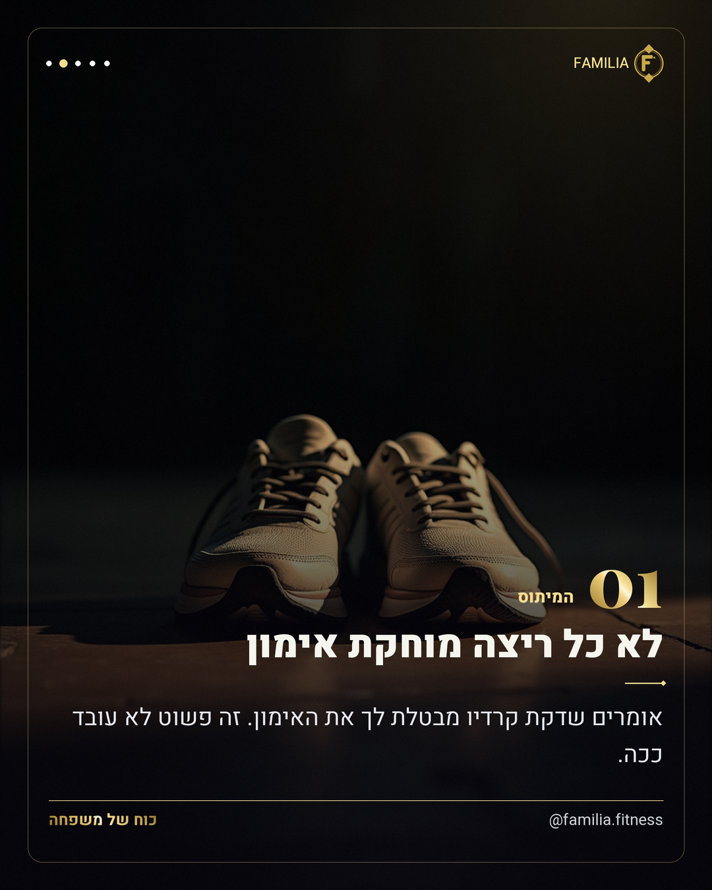
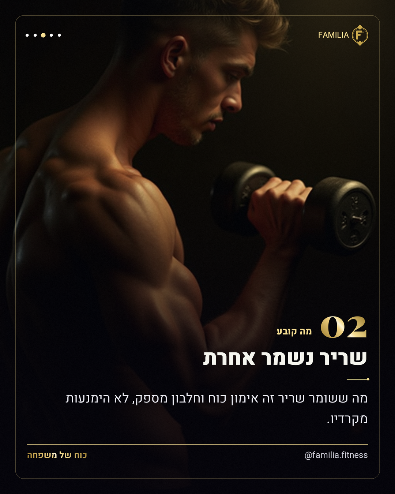
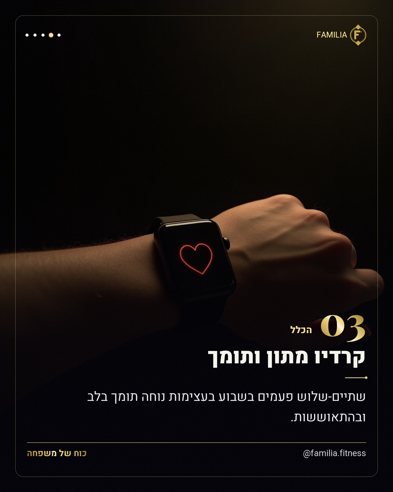
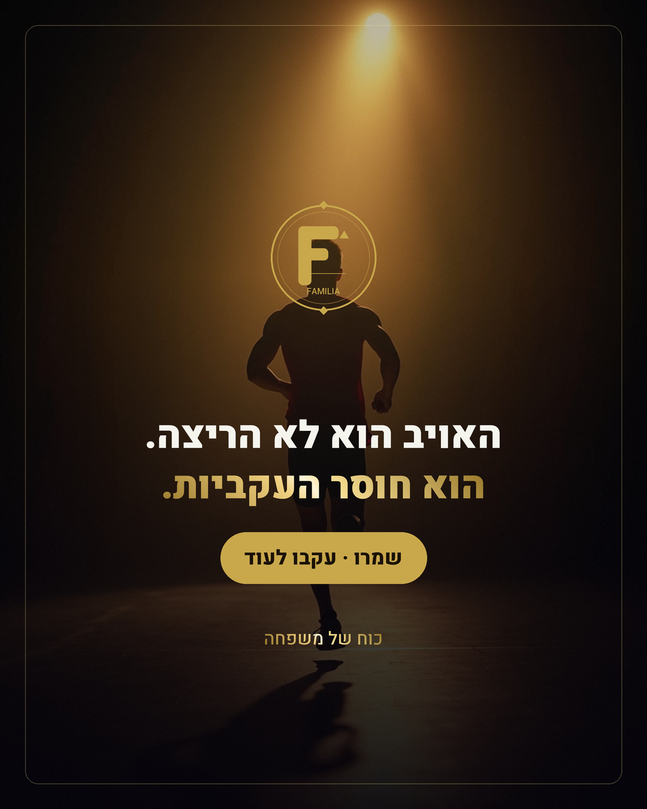

חדש מול ישן
אותה קרוסלה · אותן 5 סצנות · אותם seeds — רק הסגנון שונה
⭐ ההמלצה שלי: החדש (טבעי). הוא מתקן בדיוק את מה שאמרת — נראה אמיתי ולא AI, אור וצבע טבעיים במקום חשוך-זהוב, אנטומיה נקייה. הזהב-של-המותג עדיין נוכח בטקסט ובמסגרת. הישן יפה ודרמטי — אבל זה ה"הכול-כהה-וזהוב" שהפריע לך.
① שער · "קרדיו הוא לא אויב השריר"
ישן — שחור-זהב

② נעלי-ריצה
ישן — שחור-זהב

③ אימון-כוח
ישן — שחור-זהב

④ שעון-דופק
ישן — שחור-זהב

⑤ סיום · סילואטה
ישן — שחור-זהב

איזה קונספט מדבר אליך? תכתוב לי "חדש" או "ישן" — ואם תרצה משהו באמצע (טבעי אבל קצת יותר חם/דרמטי) גם זה אפשרי.